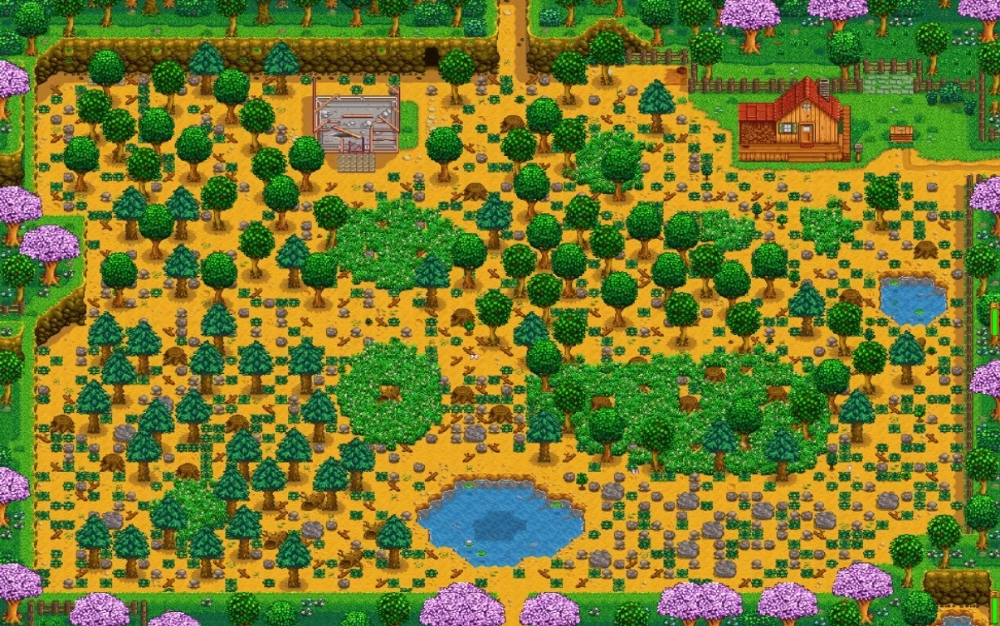
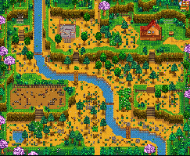
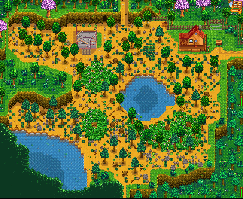
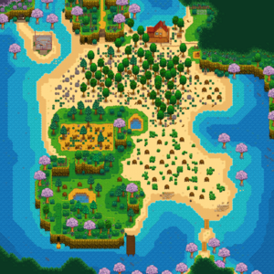

Selección de granja
Los jugadores pueden seleccionar entre siete mapas de granjas diferentes. Al ser principiantes recomendamos elegir la granja estándar.
| Nombre | Descipción | Aspecto |
| Granja Estándar | El mapa de granja original, diseñado para maximizar el espacio abierto para cultivos y animales. |  |
| Granja Forestal | El bosque se adueña del terreno, limitando el espacio agrícola. Sin embargo, hay tocones renovables en el extremo oeste del mapa, y los objetos de recolección estacionales también se generan allí. Hay un tipo de hierbajo que aparece en esta granja, que tiene un aspecto único y siempre deja caer semillas variadas cuando se corta. |  |
| Granja Minera | Con muchos acantilados y una zona minera especial en el suroeste donde se generan minerales, así como piedras con geodas únicas. |  |
| Granja Fluvial | Contiene una gran cantidad de agua... limitando el espacio para cultivos y animales. Es un lugar muy bonito donde la pesca es realmente viable... De hecho, los jugadores pueden capturar los mismos peces que están disponibles en el pueblo. |  |
| Granja Salvaje | Hay un gran lago en la esquina suroeste y un barranco a lo largo del este y del sur. Aparecen monstruos por la noche. Sus estadísticas escalan según el nivel de combate del jugador. Los gólems salvajes son únicos de este mapa. |  |
| Cuatro Esquinas | Está dividida en cuatro parcelas, cada uno con su propia ventaja. ¡Perfecto para un grupo! |  |
| Granja de Playa | Buena pesca y recolección, y mucho espacio abierto. A veces, las cajas de suministros llegan a la orilla. Sin embargo, los aspersores no funcionan en el suelo arenoso. Parece más bien adaptado a los jugadores que no dependen tanto de los cultivos. |  |